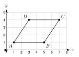
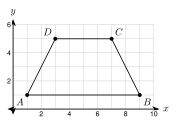
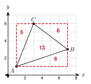
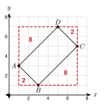

1. Find the distance from (0, 0) to (3, 4).
5
2. Find the area of a triangle with base 6 and height 4.
12 · 6 · 4 = 12
3. Simplify 45.
9 · 5 = 35
AB = |4 − (−2)| = 6. BC = |5 − 1| = 4.
AC = 62 + 42 = 52 = 213.
Perimeter = 6 + 4 + 213 = 10 + 213 ≈ 17.2.

AB = 4 and CD = 4.
BC = 22 + 32 = 13 and DA = (−2)2 + (−3)2 = 13.
Perimeter = 8 + 213 ≈ 15.2.
PQ = 5, QR = 3, PR = 25 + 9 = 34. Perimeter = 8 + 34 ≈ 13.8.

AB and DC are horizontal, so they are parallel. b1 = 9 − 1 = 8 and b2 = 7 − 3 = 4. The height is 5 − 1 = 4.
A = 12(8 + 4)(4) = 24 square units.
Base: 6 − 1 = 5. Height: 4 − 1 = 3.
A = 12(5)(3) = 7.5 square units.
Base = 6, height = 4. A = 12(6)(4) = 12 square units.

Bounding box: x from 1 to 7 and y from 1 to 6. Area = 6 · 5 = 30.
Corner triangles: bottom right, legs 6 and 2: 12(6)(2) = 6. Top right, legs 4 and 3: 12(4)(3) = 6. Top left, legs 2 and 5: 12(2)(5) = 5.
Total outside: 6 + 6 + 5 = 17. Area of △ ABC = 30 − 17 = 13 square units.
Box: 7 · 6 = 42. Corners: 12(7)(1) = 3.5, 12(4)(5) = 10, 12(3)(6) = 9. Total 22.5. Area = 42 − 22.5 = 19.5 square units.

Method 1, side lengths. AB = 22 + 22 = 8 = 22. BC = 42 + 42 = 32 = 42.
A = 22 · 42 = 8 · 2 = 16 square units.
Method 2, box. The box has x from 1 to 7 and y from 1 to 7. It is 6 · 6 = 36. The four corner triangles have areas 2, 8, 2, 8. Their total is 20. 36 − 20 = 16.
Both methods give 16.
Sides: AB = 10, BC = 6, DA = 3, and CD = 102 + 32 = 109 ≈ 10.4.
Fence: 10 + 6 + 3 + 10.4 = 29.4 feet.
The garden is a trapezoid with parallel sides DA and BC (both vertical) and height 10. Area = 12(3 + 6)(10) = 45 square feet of mulch.
Side = 32 + 22 = 13, so area = 13. Box: 5 · 5 = 25. Four triangles with legs 3 and 2 have area 3 each, total 12. 25 − 12 = 13.
1. Perimeter is the distance around. Use the distance formula for each side.
2. Area is the space inside, in square units.
3. For a trapezoid, the bases are the parallel sides.
4. The box method: area of the bounding box subtract the corner triangles.
1. (0, 0), (4, 0), (4, 3)
4 + 3 + 5 = 12
2. (−2, −3), (2, −3), (2, 2)
4 + 5 + 41 = 9 + 41 ≈ 15.4
3. (0, 0), (4, 0), (5, 3), (1, 3)
8 + 210 ≈ 14.3
4. (−2, 0), (1, 4), (5, 1)
5 + 5 + 52 = 10 + 52 ≈ 17.1
5. Rectangle (−5, −2), (3, −2), (3, 1), (−5, 1)
8 · 3 = 24
6. Triangle (0, 0), (9, 0), (9, 4)
12(9)(4) = 18
7. Trapezoid (0, 0), (10, 0), (8, 5), (3, 5)
12(10 + 5)(5) = 37.5
8. Triangle (−4, 2), (2, 2), (−1, −4)
Base 6, height 6. A = 18
9. Triangle (0, 0), (5, 2), (2, 6)
Box 5 · 6 = 30. Corners: 12(5)(2) = 5, 12(3)(4) = 6, 12(2)(6) = 6. Area = 30 − 17 = 13.
10. Quadrilateral (1, 0), (6, 1), (5, 5), (0, 3)
Box 6 · 5 = 30. Corners: 1.5, 2.5, 2, 5 (total 11). Area = 19.
11. Square (1, 0), (4, 1), (3, 4), (0, 3)
Side 10, area 10. Box: 16 − 4 · 1.5 = 10.
12. A garden has corners at (0, 0), (20, 0), (20, 10), and (5, 10). Each unit is 1 foot. How long is the fence around it? Round to the nearest tenth. Fence costs $6 per foot. What is the cost, to the nearest dollar?
Sides: 20, 10, 15, 125 ≈ 11.2. Fence ≈ 56.2 ft. Cost ≈ 56.2 · 6 ≈ $337.
13. Find the area of the garden in the last problem. One bag of mulch covers 10 square feet. How many bags does Ana need?
Trapezoid: 12(20 + 15)(10) = 175 sq ft. 175 ÷ 10 = 17.5, so 18 bags.
14. Daniel says the triangle with vertices (1, 1), (7, 1), and (3, 5) has area 6 · 4 = 24. What is wrong? What is the area?
He forgot the 12. The area is 12(6)(4) = 12.
15. A triangle has vertices at (0, 0), (8, 0), and (8, 6) on a coordinate grid. What is the perimeter of the triangle, in units?
A. 14
B. 24 ← correct
C. 28
D. 48
16. A square has vertices at (2, 0), (6, 3), (3, 7), and (−1, 4) on a coordinate grid. What is the area of the square, in square units?
A. 20
B. 25 ← correct
C. 50
D. 100
17. Triangle ABC has A(0, 0), B(8, 0), and C(4, k). The area is 20 square units. Find k. There are two answers.
12(8)|k| = 20, so |k| = 5. k = 5 or k = −5.